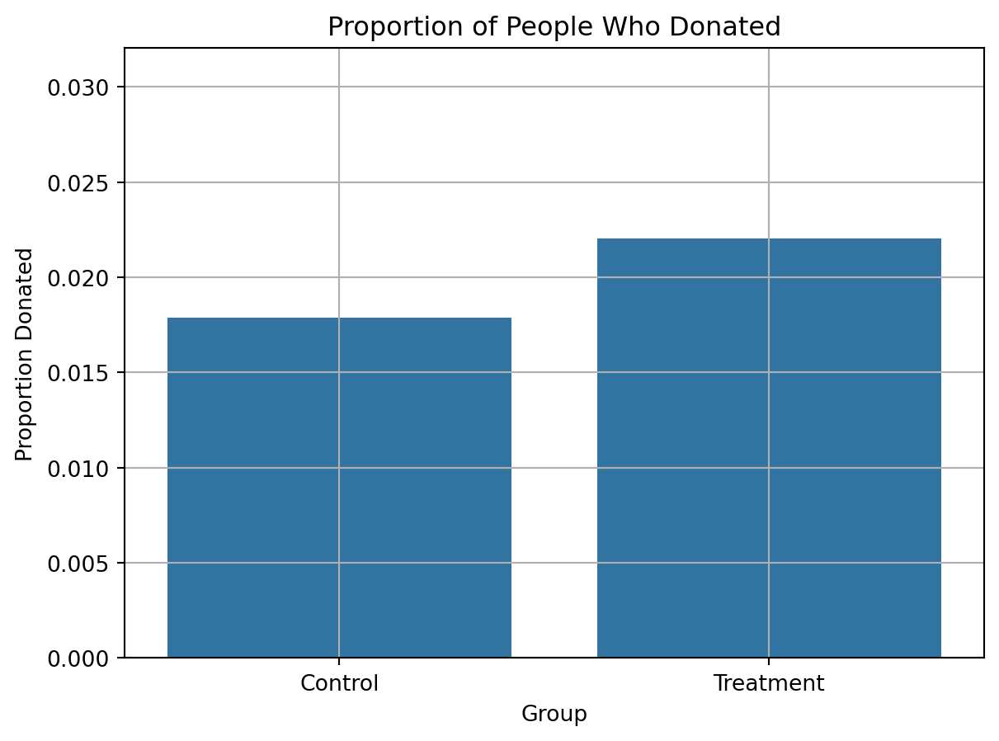
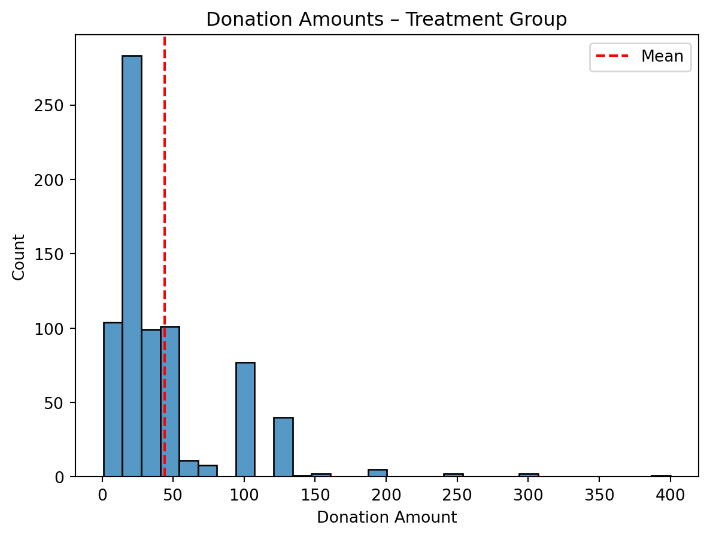
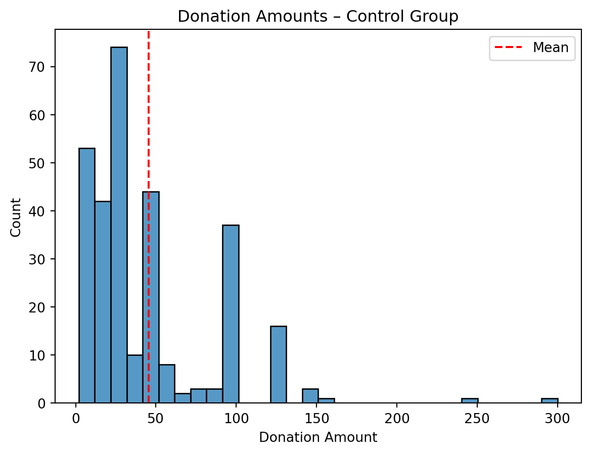
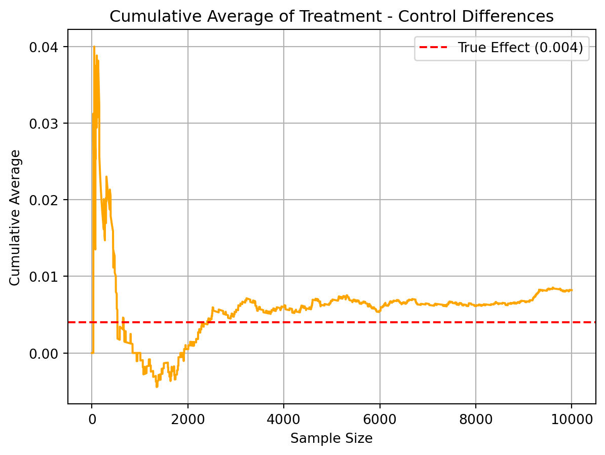

Dean Karlan at Yale and John List at the University of Chicago conducted a field experiment to test the effectiveness of different fundraising letters. They sent out 50,000 fundraising letters to potential donors, randomly assigning each letter to one of three treatments: a standard letter, a matching grant letter, or a challenge grant letter. They published the results of this experiment in the American Economic Review in 2007. The article and supporting data are available from the AEA website and from Innovations for Poverty Action as part of Harvard’s Dataverse.
This project seeks to replicate the key findings from Karlan and List (2007), explore extensions of their analysis, and reflect on the implications of their design and results. Throughout, I aim to verify treatment effects on donation rates and amounts, assess baseline balance, and explore how match ratios influence giving behavior.
Data
##Importing Pandas and also our data as df import pandas as pd df = pd.read_stata('karlan_list_2007.dta')##Looking at some of the qualities of the data##The Shapeprint("The Shape of our Data: ", df.shape)print("The Different DataTypes of our columns")print("Info: ", df.info())print("First 5 Rows", df.head())print("DataTypes of columns: ", df.dtypes)
Suggested donation was highest previous contribution
askd2
Suggested donation was 1.25 x highest previous contribution
askd3
Suggested donation was 1.50 x highest previous contribution
ask1
Highest previous contribution (for suggestion)
ask2
1.25 x highest previous contribution (for suggestion)
ask3
1.50 x highest previous contribution (for suggestion)
amount
Dollars given
gave
Gave anything
amountchange
Change in amount given
hpa
Highest previous contribution
ltmedmra
Small prior donor: last gift was less than median $35
freq
Number of prior donations
years
Number of years since initial donation
year5
At least 5 years since initial donation
mrm2
Number of months since last donation
dormant
Already donated in 2005
female
Female
couple
Couple
state50one
State tag: 1 for one observation of each of 50 states; 0 otherwise
nonlit
Nonlitigation
cases
Court cases from state in 2004-5 in which organization was involved
statecnt
Percent of sample from state
stateresponse
Proportion of sample from the state who gave
stateresponset
Proportion of treated sample from the state who gave
stateresponsec
Proportion of control sample from the state who gave
stateresponsetminc
stateresponset - stateresponsec
perbush
State vote share for Bush
close25
State vote share for Bush between 47.5% and 52.5%
red0
Red state
blue0
Blue state
redcty
Red county
bluecty
Blue county
pwhite
Proportion white within zip code
pblack
Proportion black within zip code
page18_39
Proportion age 18-39 within zip code
ave_hh_sz
Average household size within zip code
median_hhincome
Median household income within zip code
powner
Proportion house owner within zip code
psch_atlstba
Proportion who finished college within zip code
pop_propurban
Proportion of population urban within zip code
Balance Test
As an ad hoc test of the randomization mechanism, I provide a series of tests that compare aspects of the treatment and control groups to assess whether they are statistically significantly different from one another.
#These are the variables that I am going to include#They are not outcome variables, so they will be good to use to test to see if the population distrbutions are significantly different:#mrm2 – months since last donation#hpa – highest previous amount donated#freq – number of prior donationsfrom scipy.stats import timport numpy as npdef compute_ci(var, group_var="treatment", conf_level=0.95): a = df[df[group_var] ==1][var].dropna() b = df[df[group_var] ==0][var].dropna() x_a, x_b = a.mean(), b.mean() s_a, s_b = a.std(), b.std() n_a, n_b =len(a), len(b) diff = x_a - x_b se = np.sqrt((s_a**2/ n_a) + (s_b**2/ n_b)) dof =min(n_a, n_b) -1 t_star = t.ppf((1+ conf_level) /2, df=dof) margin = t_star * se lower, upper = diff - margin, diff + marginprint(f"{var} | Mean Diff: {diff:.4f} | CI: ({lower:.4f}, {upper:.4f})")# Run CI calculations for a few variablesfor variable in ["mrm2", "hpa", "freq"]: compute_ci(variable)
mrm2 | Mean Diff: 0.0137 | CI: (-0.2107, 0.2381)
hpa | Mean Diff: 0.6371 | CI: (-0.6498, 1.9239)
freq | Mean Diff: -0.0120 | CI: (-0.2238, 0.1998)
Balance Check Interpretation
To assess balance across treatment and control groups, I computed 95% confidence intervals for the difference in means on several baseline characteristics. The intervals for mrm2, hpa, and freq all include zero, suggesting that the groups were well-balanced and no statistically significant differences were present. This supports the validity of the random assignment.
Now I will go on to see if the results from making a linear regression, for variable mrm2, will match that from that as the t-test @95% confidence
from scipy.stats import timport statsmodels.api as smimport statsmodels.formula.api as smf# --- T-Test (using classic formula) ---a = df[df["treatment"] ==1]["mrm2"].dropna()b = df[df["treatment"] ==0]["mrm2"].dropna()mean_diff = a.mean() - b.mean()se = np.sqrt((a.var(ddof=1)/len(a)) + (b.var(ddof=1)/len(b)))dof =min(len(a), len(b)) -1t_stat = mean_diff / seprint(f"T-Test result for mrm2:")print(f" Mean difference: {mean_diff:.4f}")print(f" SE: {se:.4f}")print(f" t-stat: {t_stat:.4f}")# --- Linear Regression ---model = smf.ols("mrm2 ~ treatment", data=df).fit()print("\nLinear Regression result for mrm2:")print(model.summary())
T-Test result for mrm2:
Mean difference: 0.0137
SE: 0.1145
t-stat: 0.1195
Linear Regression result for mrm2:
OLS Regression Results
==============================================================================
Dep. Variable: mrm2 R-squared: 0.000
Model: OLS Adj. R-squared: -0.000
Method: Least Squares F-statistic: 0.01428
Date: Tue, 06 Jan 2026 Prob (F-statistic): 0.905
Time: 20:53:01 Log-Likelihood: -1.9585e+05
No. Observations: 50082 AIC: 3.917e+05
Df Residuals: 50080 BIC: 3.917e+05
Df Model: 1
Covariance Type: nonrobust
==============================================================================
coef std err t P>|t| [0.025 0.975]
------------------------------------------------------------------------------
Intercept 12.9981 0.094 138.979 0.000 12.815 13.181
treatment 0.0137 0.115 0.119 0.905 -0.211 0.238
==============================================================================
Omnibus: 8031.352 Durbin-Watson: 2.004
Prob(Omnibus): 0.000 Jarque-Bera (JB): 12471.135
Skew: 1.163 Prob(JB): 0.00
Kurtosis: 3.751 Cond. No. 3.23
==============================================================================
Notes:
[1] Standard Errors assume that the covariance matrix of the errors is correctly specified.
To verify the balance of baseline variable mrm2, I conducted both a two-sample t-test and a linear regression with treatment as the sole predictor. Both approaches yielded nearly identical estimates:
Mean difference: 0.0137
Standard error: ~0.115
t-statistic: 0.119
These consistent results confirm that a linear regression with a binary treatment variable is mathematically equivalent to a t-test. This approach mirrors the analysis used in Table 1 of Karlan and List (2007), which demonstrates the success of randomization in balancing observable characteristics across groups. ## Experimental Results
Charitable Contribution Made
First, I analyze whether matched donations lead to an increased response rate of making a donation.
import seaborn as snsimport matplotlib.pyplot as plt# Calculate mean donation rate by groupdonation_rates = df.groupby("treatment")["gave"].mean().reset_index()donation_rates["group"] = donation_rates["treatment"].map({0: "Control", 1: "Treatment"})# Create barplotsns.barplot(data=donation_rates, x="group", y="gave")plt.title("Proportion of People Who Donated")plt.ylabel("Proportion Donated")plt.xlabel("Group")plt.ylim(0, donation_rates["gave"].max() +0.01)plt.grid(True)plt.show()

from scipy.stats import ttest_indimport statsmodels.formula.api as smf# T-test: donation rates (binary outcome)gave_ttest = ttest_ind(df[df["treatment"] ==1]["gave"], df[df["treatment"] ==0]["gave"])print("T-test result for 'gave' (donation made):", gave_ttest)# Bivariate regression: gave ~ treatmentgave_reg = smf.ols("gave ~ treatment", data=df).fit()print(gave_reg.summary())
T-test result for 'gave' (donation made): TtestResult(statistic=3.101361000543946, pvalue=0.0019274025949016982, df=50081.0)
OLS Regression Results
==============================================================================
Dep. Variable: gave R-squared: 0.000
Model: OLS Adj. R-squared: 0.000
Method: Least Squares F-statistic: 9.618
Date: Tue, 06 Jan 2026 Prob (F-statistic): 0.00193
Time: 20:53:02 Log-Likelihood: 26630.
No. Observations: 50083 AIC: -5.326e+04
Df Residuals: 50081 BIC: -5.324e+04
Df Model: 1
Covariance Type: nonrobust
==============================================================================
coef std err t P>|t| [0.025 0.975]
------------------------------------------------------------------------------
Intercept 0.0179 0.001 16.225 0.000 0.016 0.020
treatment 0.0042 0.001 3.101 0.002 0.002 0.007
==============================================================================
Omnibus: 59814.280 Durbin-Watson: 2.005
Prob(Omnibus): 0.000 Jarque-Bera (JB): 4317152.727
Skew: 6.740 Prob(JB): 0.00
Kurtosis: 46.440 Cond. No. 3.23
==============================================================================
Notes:
[1] Standard Errors assume that the covariance matrix of the errors is correctly specified.
I performed a t-test to compare the donation rates between individuals who received a matching donation offer and those who did not. The test yielded a statistically significant result (p = 0.0019), indicating that those who received the match offer were more likely to donate. While the absolute difference in rates is small (from ~1.8% to ~2.2%), the result is highly unlikely to have occurred by chance. This suggests that even modest behavioral nudges — such as the promise of a matched gift — can influence charitable giving. This supports the idea presented in Table 2a of Karlan and List (2007), where matched donations are shown to increase response rates.
Probit Model Interpretation
I used a probit regression to model the likelihood that a person made a charitable donation as a function of whether they were offered a matching donation. The coefficient on the treatment variable was positive and statistically significant (z = 3.11, p = 0.002), suggesting that individuals who received the matching offer were more likely to donate.
import statsmodels.api as sm# Prepare data for probitX = sm.add_constant(df["treatment"]) # Add intercepty = df["gave"]# Fit probit modelprobit_model = sm.Probit(y, X).fit()print(probit_model.summary())
Probit regression is more appropriate for binary outcomes like donation (gave = 0/1) than OLS, because it models probabilities between 0 and 1 using the cumulative normal distribution. It’s a standard choice in applied microeconomics and matches the method used by Karlan & List (2007).
Although the raw coefficient from a probit model isn’t directly interpretable as a probability, the significant result aligns with earlier t-tests and linear regression findings. This confirms that the treatment has a measurable effect on donation behavior. In essence, people respond to matching offers — even small nudges like this can meaningfully influence giving.
I also took the liberty of calculating how much more likely someone is to donate because of the treatment, in percentage terms.
# Get marginal effectsmarginal_effects = probit_model.get_margeff()print(marginal_effects.summary())
Being offered a matching donation increases the probability of giving by approximately 0.43 percentage points (e.g., from 1.8% to ~2.2%). While small, this is statistically significant and meaningful in a high-volume fundraising context.
NOTE: Linear regression results appear replicate Table 3 column 1 in the paper. Probit results do not, despite Table 3 indicating its results come from probit regressions…
Differences between Match Rates
Next, I assess the effectiveness of different sizes of matched donations on the response rate.
Match Ratio Interpretation (T-test + Regression)
I conducted a series of t-tests to examine whether higher match ratios (2:1 and 3:1) led to higher donation rates compared to a 1:1 match. None of the comparisons were statistically significant. This aligns with the findings of Karlan and List (2007), who similarly reported that while matched donations increased giving compared to no match, larger match ratios did not consistently lead to higher response rates. This suggests that the presence of a match, rather than its magnitude, may be the primary behavioral driver.
from scipy.stats import ttest_ind# 1:1 vs 2:1gave_1to1 = df[df["ratio"] ==1]["gave"]gave_2to1 = df[df["ratio"] ==2]["gave"]ttest_2vs1 = ttest_ind(gave_2to1, gave_1to1)print("2:1 vs 1:1 match rate:", ttest_2vs1)# 2:1 vs 3:1gave_3to1 = df[df["ratio"] ==3]["gave"]ttest_3vs2 = ttest_ind(gave_3to1, gave_2to1)print("3:1 vs 2:1 match rate:", ttest_3vs2)# (Optional) 1:1 vs 3:1ttest_3vs1 = ttest_ind(gave_3to1, gave_1to1)print("3:1 vs 1:1 match rate:", ttest_3vs1)
2:1 vs 1:1 match rate: TtestResult(statistic=0.96504713432247, pvalue=0.33453168549723933, df=22265.0)
3:1 vs 2:1 match rate: TtestResult(statistic=0.05011583793874515, pvalue=0.9600305283739325, df=22261.0)
3:1 vs 1:1 match rate: TtestResult(statistic=1.0150255853798622, pvalue=0.3101046637086672, df=22260.0)
Why Regression Might Reveal More
The regression model pools variance and uses all three match groups in one estimation, which can provide slightly more power than isolated pairwise t-tests. It also allows you to assess the pattern of effects together, rather than in fragments.
# Create ratio indicatorsdf["ratio1"] = (df["ratio"] ==1).astype(int)df["ratio2"] = (df["ratio"] ==2).astype(int)df["ratio3"] = (df["ratio"] ==3).astype(int)# Regression using manual indicators (that I just created)manual_reg = smf.ols("gave ~ ratio2 + ratio3", data=df).fit()print(manual_reg.summary())
In this regression, I examined whether the size of the match ratio influenced the likelihood of donating. The model uses the 1:1 match group as the baseline. Both the 2:1 and 3:1 match groups showed small but statistically significant increases in donation rates, around +0.36 to +0.37 percentage points. This contrasts slightly with the t-tests, which did not find significant differences — likely because the regression model uses more degrees of freedom and pools variance more efficiently.
The results suggest that larger match ratios may have had a small positive impact, though the effect size is modest. This provides slightly more evidence than Karlan and List (2007), who found no consistent effects. However, even in this case, the behavioral change is relatively small, supporting the idea that the presence of a match may matter more than its magnitude.
Size of Charitable Contribution
In this subsection, I analyze the effect of the size of matched donation on the size of the charitable contribution.
Below is the T-Test:
from scipy.stats import ttest_ind# T-test comparing average donation amount (including 0s)t_amount = ttest_ind(df[df["treatment"] ==1]["amount"], df[df["treatment"] ==0]["amount"])print("T-test on donation amount:")print(t_amount)
T-test on donation amount:
TtestResult(statistic=1.8605020225753781, pvalue=0.06282038947470686, df=50081.0)
The results of this indicate:
Now I am running a bivariate linear regression of the donation amount on the treatment status. It shows:
import statsmodels.formula.api as smf# OLS regression of donation amount on treatmentamount_reg = smf.ols("amount ~ treatment", data=df).fit()print(amount_reg.summary())
I analyzed whether people in the treatment group gave more money, on average, than those in the control group. Both a t-test and a linear regression yielded nearly identical results: treatment group participants donated about $0.15 more, but the difference was not statistically significant (p ≈ 0.063). This suggests that while there may be a small increase in donation amount due to the treatment, the effect is weak and uncertain when including non-donors in the analysis.
import statsmodels.formula.api as smf# Filter to only people who donateddonors = df[df["amount"] >0]# Run regression on amount given, conditional on donatingdonation_reg = smf.ols("amount ~ treatment", data=donors).fit()print(donation_reg.summary())
I restricted the sample to only those who donated and regressed the donation amount on treatment status. The results showed that donors in the treatment group gave, on average, $1.67 less than those in the control group. However, this difference was not statistically significant (p = 0.561). This suggests that while the match offer may have influenced the decision to donate, it did not affect how much was given among those who did donate.
Causality Caveat
This regression is not strictly causal, because it conditions on having donated — which is a post-treatment outcome. That means you’re selecting a subset of people whose outcome (donating) may itself have been influenced by the treatment. This could introduce selection bias, so while the analysis is informative, it should be interpreted descriptively rather than causally.
Histogram Interpretation
I created histograms of donation amounts among donors in both the treatment and control groups. Both groups show similar distributions, with most donations clustering around $25 to $75. The red line shows the mean donation, which is slightly higher in the control group. These visuals reinforce the regression results — while the treatment may have influenced donation likelihood, it did not lead to higher amounts among those who gave.
import seaborn as snsimport matplotlib.pyplot as plt# Filter to donors onlydonors = df[df["amount"] >0]# --- Histogram for Treatment Group ---sns.histplot(data=donors[donors["treatment"] ==1], x="amount", bins=30, kde=False)plt.axvline(donors[donors["treatment"] ==1]["amount"].mean(), color='red', linestyle='--', label="Mean")plt.title("Donation Amounts – Treatment Group")plt.xlabel("Donation Amount")plt.ylabel("Count")plt.legend()plt.show()# --- Histogram for Control Group ---sns.histplot(data=donors[donors["treatment"] ==0], x="amount", bins=30, kde=False)plt.axvline(donors[donors["treatment"] ==0]["amount"].mean(), color='red', linestyle='--', label="Mean")plt.title("Donation Amounts – Control Group")plt.xlabel("Donation Amount")plt.ylabel("Count")plt.legend()plt.show()


Simulation Experiment
As a reminder of how the t-statistic “works,” in this section I use simulation to demonstrate the Law of Large Numbers and the Central Limit Theorem.
Suppose the true distribution of respondents who do not get a charitable donation match is Bernoulli with probability p=0.018 that a donation is made.
Further suppose that the true distribution of respondents who do get a charitable donation match of any size is Bernoulli with probability p=0.022 that a donation is made.
Law of Large Numbers
To illustrate the Law of Large Numbers, I simulated differences in donation rates between treatment and control groups and plotted the cumulative average over 10,000 draws. While early sample differences fluctuated substantially, the average steadily approached the true treatment effect of 0.004. This demonstrates how, with large enough samples, the sample average converges to the population mean — providing reassurance about the reliability of randomized experimental estimates.
import numpy as npimport matplotlib.pyplot as pltnp.random.seed(42)# Simulate donation outcomes (1 = gave, 0 = didn’t give)control_draws = np.random.binomial(1, 0.018, 10000)treatment_draws = np.random.binomial(1, 0.022, 10000)# Calculate the difference in each trialdiffs = treatment_draws - control_draws# Cumulative average of differencescum_avg = np.cumsum(diffs) / (np.arange(1, len(diffs)+1))# Plot the cumulative averageplt.plot(cum_avg, color='orange')plt.axhline(0.004, color='red', linestyle='--', label="True Effect (0.004)")plt.title("Cumulative Average of Treatment - Control Differences")plt.xlabel("Sample Size")plt.ylabel("Cumulative Average")plt.legend()plt.grid(True)plt.show()

Central Limit Theorem
I simulated 1000 samples for four different sizes (n = 50, 200, 500, 1000) and plotted the sampling distribution of the mean difference in donation rates. As expected, with increasing sample size, the distributions became more symmetric and concentrated around the true treatment effect. This visualizes the Central Limit Theorem — regardless of the population distribution, the sampling distribution of the mean becomes approximately normal as the sample size grows.
import seaborn as snsimport matplotlib.pyplot as pltimport numpy as npsample_sizes = [50, 200, 500, 1000]np.random.seed(42)for n in sample_sizes: sim_means = []for _ inrange(1000): control_sample = np.random.binomial(1, 0.018, n) treatment_sample = np.random.binomial(1, 0.022, n) sim_means.append(np.mean(treatment_sample - control_sample))# Plot histogram of sampling distribution plt.figure() sns.histplot(sim_means, bins=30) plt.title(f"Sampling Distribution of Mean Difference (n = {n})") plt.xlabel("Mean Difference") plt.ylabel("Frequency") plt.grid(True) plt.show()